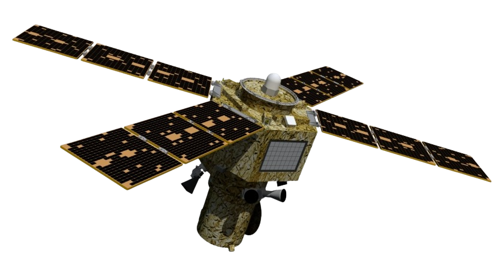

AstroLabs is a cutting-edge company that leverages the power of AI to revolutionize space exploration through rocket technology. By integrating AI algorithms into their rockets, AstroLabs is able to enhance various aspects of space missions, such as navigation, propulsion, and data analysis. Their advanced AI systems enable more precise trajectory calculations, efficient fuel consumption, and real-time monitoring of mission parameters. AstroLabs' innovative approach to space exploration not only improves the overall success rate of missions but also opens up new possibilities for scientific discoveries and advancements in our understanding of the universe.
